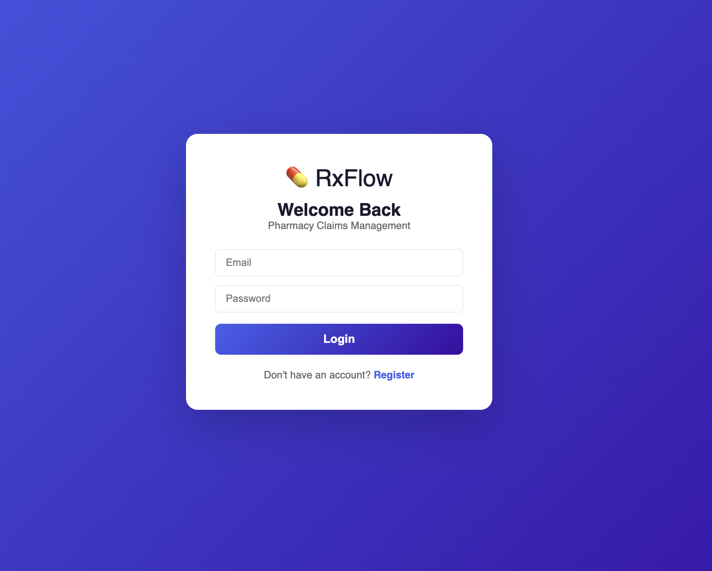
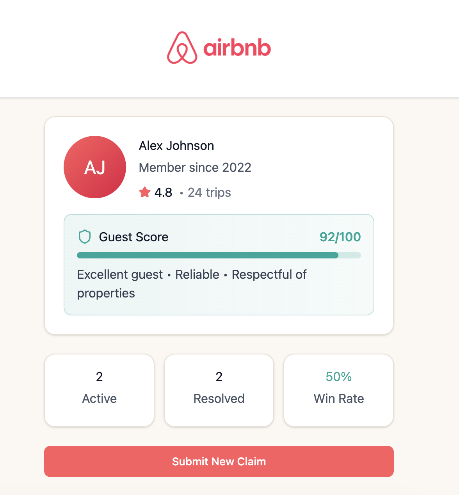
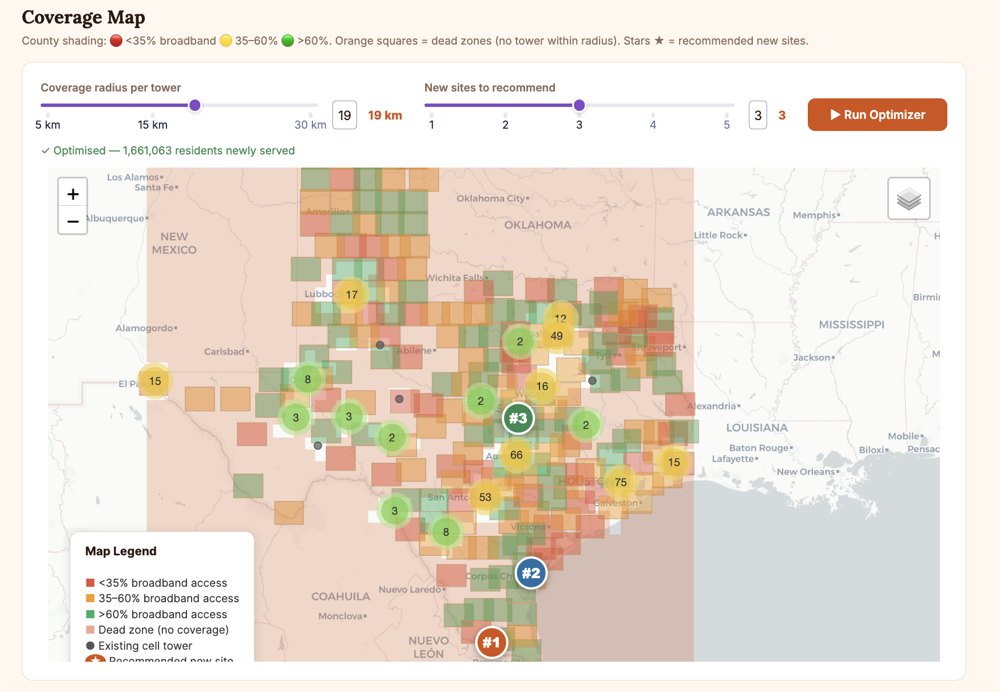
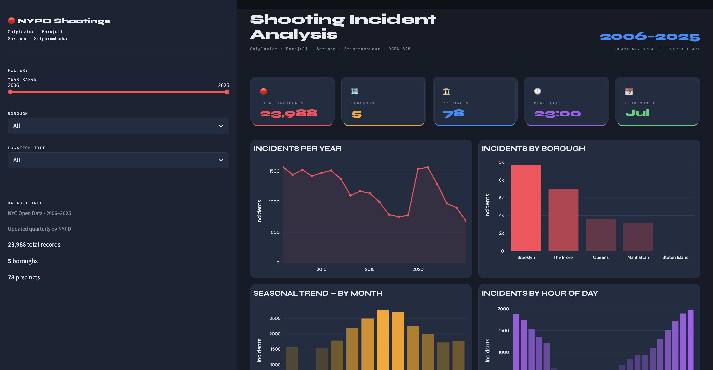
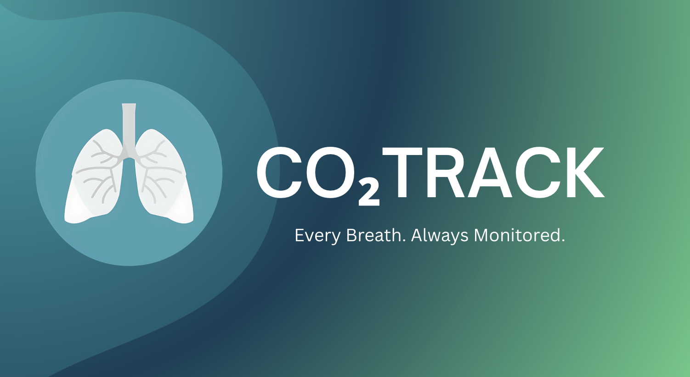
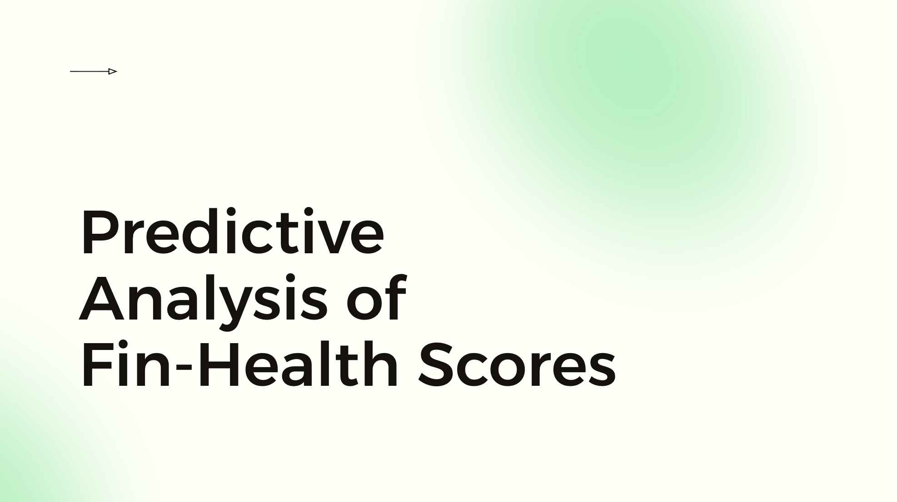

03 — Projects
Things I've Built
Selected AI/ML, data engineering, software, and product work

RxFlow
Beta end-to-end pharmacy management system with a normalized PostgreSQL schema, REST API layer, and insurance verification across 3 data sources.

ClaimSafe
Structured claims verification dashboard designed from 500+ user reviews, using NLP signals to identify high-impact friction points.

Texas Rural Broadband Coverage Optimizer
Geospatial optimization pipeline ingesting 2 government APIs across 208 Texas counties and recommending sites to serve 1.66M underserved residents.

NYPD Shooting Incident Pipeline
Interactive analytics dashboard for NYC shooting incidents with year, borough, location, seasonal, and hourly trend views.

CO2 Track
SLING Health venture concept for a non-invasive CO2 wearable for COPD patients, shaped through stakeholder interviews and product validation.

Financial Health Score Predictor
Predictive modeling pipeline for financial health scores using API-ingested company indicators, ML risk classification, and explainable scoring.
 Python
Python JavaScript
JavaScript R
R Bash
Bash C++
C++ PyTorch
PyTorch TensorFlow
TensorFlow NumPy
NumPy Pandas
Pandas Scikit-learn
Scikit-learn spaCy
spaCy PostgreSQL
PostgreSQL MongoDB
MongoDB SQLite
SQLite SQLAlchemy
SQLAlchemy GCP
GCP Docker
Docker FastAPI
FastAPI RabbitMQ
RabbitMQ Streamlit
Streamlit Plotly
Plotly Tableau
Tableau Figma
Figma Git
Git GitHub
GitHub Jupyter
Jupyter React
React Node.js
Node.js Vercel
Vercel